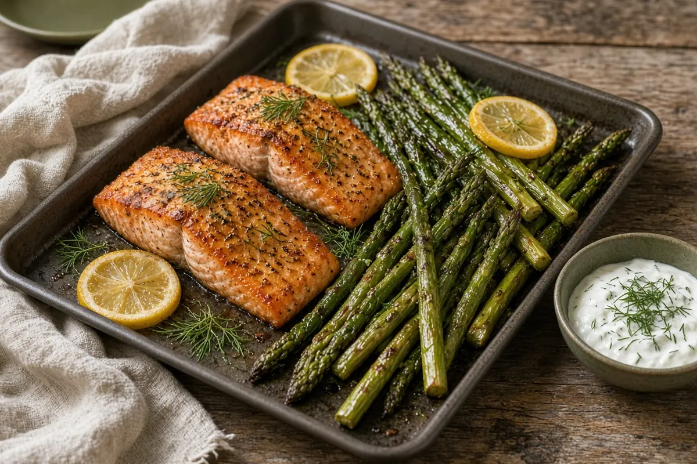

Salmon with Creamy Dill Sauce and Roasted Asparagus
Salmon fillets and asparagus roasted together on one pan, served with a quick sour cream, dill, lemon, and Dijon sauce.

4 servings
By
Yield: 4 servings
Prep:
Cook:
Total:
Difficulty: Easy
Ingredients
- 4 salmon fillets (about 6 oz each)
- 1 Tbsp olive oil, plus a little more for the asparagus
- Salt and pepper, to taste
- 1 lb asparagus, trimmed
- 1/2 cup sour cream (or Greek yogurt)
- 1 Tbsp fresh dill, chopped
- 1 Tbsp lemon juice
- 1 tsp Dijon mustard
- 1 clove garlic, minced
Instructions
- Heat the oven to 400°F and line a sheet pan with parchment.
- Set the salmon on the pan, drizzle with the olive oil, and season with salt and pepper. Arrange the asparagus beside it, drizzle with a little more oil, and season.
- Roast 12 minutes, until the salmon flakes easily and the asparagus is crisp-tender.
- While it roasts, stir together the sour cream, dill, lemon juice, Dijon mustard, garlic, and a pinch of salt and pepper.
- Plate each fillet with a big spoonful of dill sauce and the asparagus alongside.
Notes: Thicker fillets may need 15 minutes. Skin-on salmon (fattier belly pieces especially) stays the most moist.